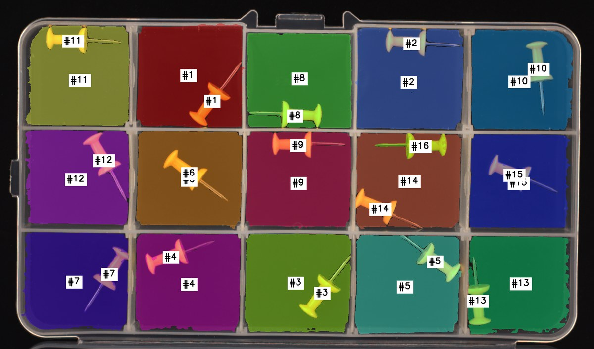

Abstract
Logical Anomaly Detection requires verifying whether all category-specific constraints — object counts, pairing relations, measurement ranges — are satisfied by a query image, given only a few normal references.
Recent methods based on large vision-language models formulate this as checklist verification, decomposing the decision into independent textual checks. This decomposition, however, is text-only. Every item still reads the same unmodified query image, so the model must extract different forms of visual evidence from one raw picture. We identify this text–image mismatch as a constraint-specific perception gap, the source of two failure modes: instance conflation for binding constraints and scale drift for calibration constraints.
To diagnose whether these failures stem from insufficient reasoning or insufficient perception, we compare textual reasoning guides against visual perception guides in a training-free setting. Reasoning over the same image provides little benefit, whereas adapting the visual input to each constraint substantially improves accuracy. Building on this, we propose CASCADE, a training-free framework that extends checklist decomposition with constraint-specific visual scaffolds, and CASCADE++, which adapts those scaffolds at the object level by deriving their configuration from the constraint structure and the reference distribution.
Two scaffolds, chosen by the rule
Which scaffold a constraint gets is decided from the constraint's own wording. No part of the pipeline branches on what the product is.
Disambiguation scaffold
The difficulty is telling apart instances that look identical. Every instance is given its own colour and number, and instances matched to each other share both — so a correspondence can be read off the image instead of held in memory.
Alignment scaffold
The difficulty is judging a continuous quantity by eye. A grid fitted on the normal references is drawn over the image with every intersection labelled, and the question asks about an integer interval computed in code.

What the model actually sees

Results
Image-level AUROC on the MVTec-LOCO logical subset, with three reference images and no training. CASCADE++ exceeds the full-shot state of the art by 3.9 points.
| Method | Backbone | Avg | BB | JB | PP | SB | SC |
|---|---|---|---|---|---|---|---|
| PatchCore | CNN | 74.0 | 74.8 | 93.9 | 63.6 | 57.8 | 79.2 |
| AST | CNN | 79.7 | 80.0 | 91.6 | 65.1 | 80.1 | 81.8 |
| GCAD | CNN | 86.0 | 87.0 | 100.0 | 97.5 | 56.0 | 89.7 |
| EfficientAD | CNN | 86.8 | 85.5 | 98.4 | 97.7 | 56.7 | 95.5 |
| WinCLIP | CLIP | 64.3 | 57.6 | 75.1 | 54.9 | 69.5 | 64.5 |
| LogSAD | GPT-4o | 84.6 | 90.9 | 85.4 | 81.4 | 81.7 | 83.7 |
| LogicAD | GPT-4o | 86.0 | 93.1 | 81.6 | 98.1 | 83.8 | 73.4 |
| LogicQA | GPT-4o | 87.6 | 87.6 | 88.2 | 98.4 | 71.5 | 92.4 |
| LogSAD (full-shot) | GPT-4o | 89.3 | — | — | — | — | — |
| LogicAD | GPT-5-image-mini | 85.5 | 94.7 | 80.5 | 97.6 | 79.3 | 75.3 |
| LogicQA | GPT-5-image-mini | 86.2 | 91.6 | 88.7 | 97.3 | 68.0 | 85.3 |
| CASCADE++ (ours) | GPT-5-image-mini | 93.2 | 91.4 | 94.7 | 96.6 | 95.8 | 87.7 |
Run it
Instance masks ship precomputed, so the pipeline runs from a plain install — no API key, no GPU and no dataset needed to see what it does.
git clone https://github.com/edjjincode/CASCADE && cd CASCADE
pip install -r requirements.txt
python run.py constraints # the 19 rules, and how each is classified
python run.py show PP-L1 # one rule: its decomposition, and the exact prompt sent
python -m pytest tests -q # 26 tests, no key and no datasetshow prints the complete prompt the model receives — not a summary. Every
prompt lives in the repository as plain text, each with a header saying what goes in, what
comes out, and which function sends it.
BibTeX
@inproceedings{kim2026cascade,
title = {CASCADE: Constraint-Aware Scaffolded Decomposition
for Logical Anomaly Detection},
author = {Kim, Jinchan and Im, Jinhee and Cho, Hyunsouk},
booktitle = {IEEE International Conference on Data Mining (ICDM)},
year = {2026}
}